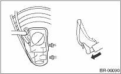
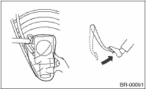
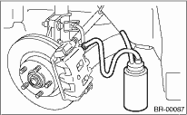
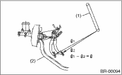

CAUTION:
• Do not let brake fluid come into contact with the painted surface of the vehicle body. Wash away with water immediately and wipe off if it is spilled by accident.
• Avoid mixing brake fluid of different brands to prevent fluid performance from degrading.
• Be careful not to allow dirt or dust to enter into reservoir tank.
NOTE:
• When the master cylinder is disassembled or the reservoir tank is empty, bleed the master cylinder.
• If bleeding of the master cylinder is not necessary, omit the following procedures, and perform bleeding of the brake line. 
1. Fill the reservoir tank of the master cylinder with brake fluid.
NOTE:
While bleeding air, keep the reservoir tank filled with brake fluid to prevent entry of air.
2. Disconnect the brake line at primary and secondary sides.
3. Wrap the master cylinder with a plastic bag.
4. Depress the brake pedal slowly and hold it.

5. Plug the outlet plug with your finger, and then release the brake pedal.

6. Repeat the step 4) and 5) several times.
7. Remove the plastic bag.
8. Install the brake pipe to the master cylinder.
Tightening torque:
Model with ABS
15 N·m (1.5 kgf-m, 10.8 ft-lb)
Model with VDC
19 N·m (1.9 kgf-m, 14.0 ft-lb)
9. Bleed air from the brake line.
1. When the master cylinder is disassembled or the reservoir tank is empty, bleed the master cylinder before bleeding the brake line.
2. Fill the reservoir tank of the master cylinder with brake fluid.
NOTE:
While bleeding air, keep the reservoir tank filled with brake fluid to prevent entry of air.
3. Attach one end of the vinyl tube to the air bleeder and the other end to the brake fluid container.

4. Depress the brake pedal several times and hold it depressed.
5. Loosen the air bleeder screw to drain brake fluid. Tighten the air bleeder quickly, and release the brake pedal.
6. Repeat the steps 4) to 5) until there are no more air bubbles in the vinyl tube.
7. Repeat the steps from 2) to 6) above to bleed air from each wheel.
NOTE:
Perform the operation in the order from closest wheel cylinder to the master cylinder.
8. Securely tighten the air bleeder screws.
Tightening torque:
8 N·m (0.8 kgf-m, 5.8 ft-lb)
9. Check that there are no brake fluid leaks in the entire system.
10. Check the pedal stroke.
Run the engine at idle after warming up the engine, and depress the brake pedal with a force of 500 N (51 kgf, 112 lbf). Measure the distance between the brake pedal and steering wheel. Release the pedal, and measure the distance between pedal and steering wheel again.

|
(1) |
Steering wheel |
|
(2) |
Toe board |
Specification of pedal stroke:
European/General model:
90 mm (3.54 in)
Australian model:
105 mm (4.13 in)
[When depressing the pedal with a force of 500 N (51 kgf, 112 lbf).]
11. If the distance is more than specification, there is a possibility of air being caught in the brake line. Bleed the brake line of all air until the pedal stroke meets the specification.
12. Operate the hydraulic control unit in the sequence control mode.
13. Check the pedal stroke again.
14. If the distance is more than specification, there is a possibility of air being caught in the hydraulic unit. Repeat above steps 2) to 9) until the pedal stroke meets the specification.
15. Fill the reservoir tank with brake fluid up to the “MAX” level.
16. Test run the vehicle and ensure that the brakes operate normally.